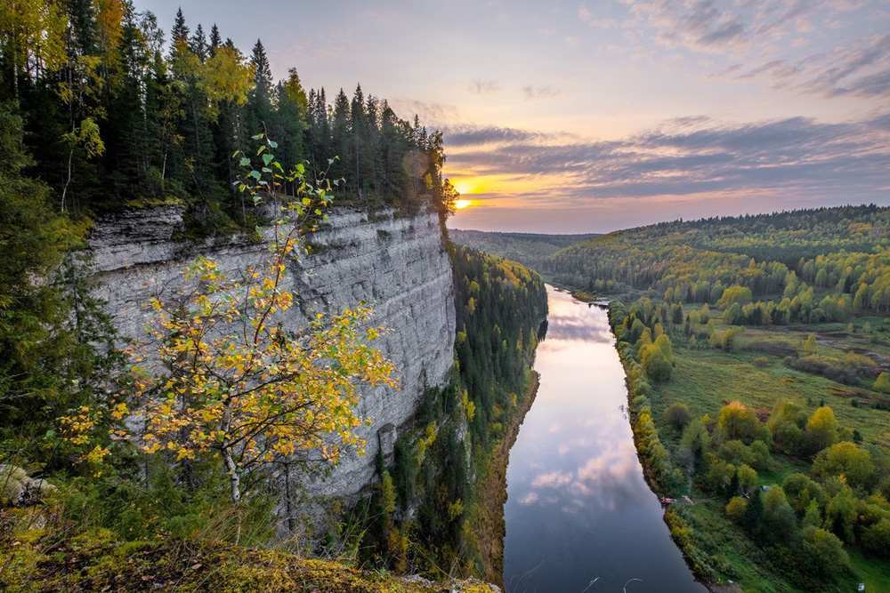
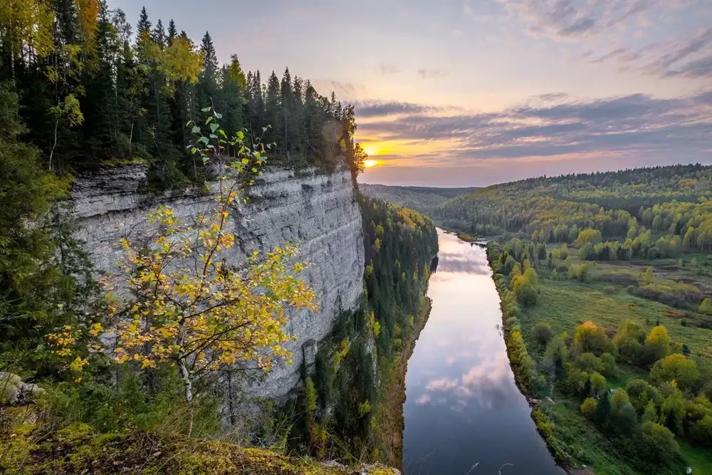

Формат WebP - современный формат изображений, который повзоляет ужимать изображения без поетри качества или с минимальной потерей.
Он отлично работает с прозрачными изображениями, анимациями, многоцветными картинками, зачастую может иметь размер даже меньше, чем JPEG, сохраняя хорошее качество.
Но самый главный минус этого формата в том, что он поддерживатеся не всеми бразуерами, например, Internet Explorer не поддерживает WebP вообще.
Вот список поддержки на десктопных браузерах:
Сравним изображение в разных форматах:

Как мы видим, все три изображения абсолютно равнозначны по качеству изображению, но WebP выигрывает по размеру.
Сравним два изображения по 100 КБ, первое - в формате JPEG, второе - WebP:


При беглом взгляде разница не видна, но если присмотреться, то JPEG хуже отображает некоторые участки, например, водную гладь или небо с облаками, видна
"пикселньность". Если увеличить параметры, то эти различия становятся еще более очевидными, поэтому здесь аккуратнее выглядит формат WebP